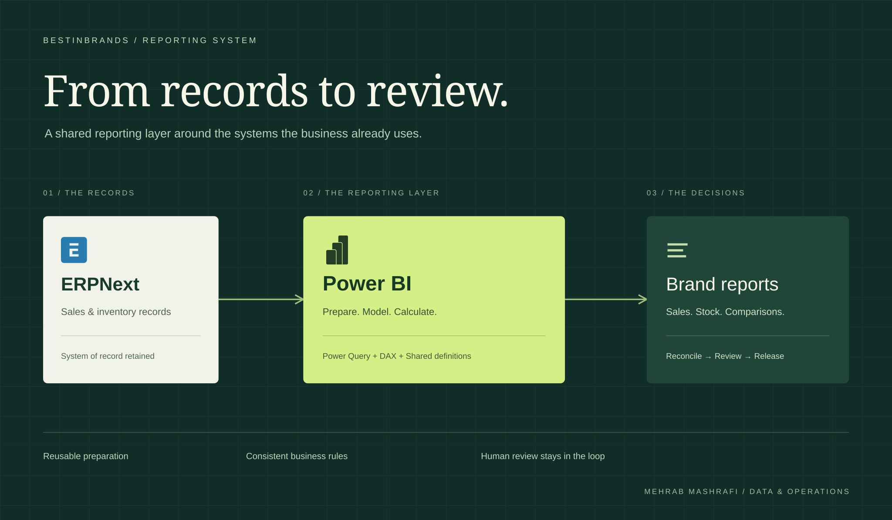

BestinBrands / Business intelligence / Client project
A reporting workflow
built to repeat.
Different brands. Different reporting rules. The same preparation, every month. At BestinBrands, I helped turn that recurring work into a shared Power BI reporting model.

- Client & setting
- BestinBrands
Brand distribution, Bangladesh - My contribution
- ETL, Power Query, DAX, data modelling and reporting QA, as a Data Analyst at Invento Software Limited
- Core platforms
- ERPNext & Power BI
Sales and inventory reporting
01 / The business
One distributor.
Many reporting requirements.
BestinBrands distributes and markets international beauty and luxury brands in Bangladesh. Reporting has to make sense at both portfolio and individual brand level.
Sales by product, channel and location. Inventory alongside sales performance. Different brand formats and reporting periods. The team needed to bring these views together before it could review the business.
02 / The friction
The records existed.
The preparation kept returning.
ERPNext held the operational records. The reporting route involved preparing that data, transferring it through Salesforce, then extracting it for final reports. Spreadsheet cleaning and reconciliation returned with each cycle.
Salesforce already automated monthly and yearly comparisons. The opportunity was to change how the figures reached the reports, while retaining the business rules the team relied on.
Finishing one reporting cycle did not remove the preparation from the next.
The Salesforce transfer and extraction stage was no longer required for these reports. This change concerns the reporting route, not Salesforce’s use elsewhere in the business.
03 / What I built
Prepare once.
Reuse the rules.
I built the preparation steps, reporting model, business calculations and quality checks during my role at Invento. The wider implementation connected the source data through a gateway, with a second node configured for fallback.
We kept ERPNext as the system of record. Power BI became the reporting layer around it, so the team could work from shared definitions without replacing its operational system.
Move preparation into Power Query
Cleaning and transformation steps became reusable queries. Scheduled incremental refresh brought in updated figures while keeping reporting history.
Keep calculations in a shared model
DAX held business calculations, fiscal calendars and currency conversion rules. Relationships and definitions could be maintained centrally instead of being rebuilt in separate workbooks.
Give people a clear review point
Reconciliation checks flagged mismatches before release. The pipeline prepared the figures; the team still investigated exceptions and decided when reports were ready.
 One shared Power BI modelRelationships · DAX · Fiscal periods · Currency rules
One shared Power BI modelRelationships · DAX · Fiscal periods · Currency rules04 / What changed
Less assembly.
More room for review.
For the most complex recurring report, the delivery team estimated that preparation fell from three or four days to about one day. Repeated cleaning and calculation steps now ran through the pipeline.
Preparation time for the most complex recurring report
Approximate times reported by Invento’s delivery team on 4 September 2026. This estimate applies to one complex recurring report, not every report or the full monthly reporting cycle.
The broader change was repeatability: shared definitions, retained history and a common place to prepare reports. Review remained part of the process, with exceptions surfaced for people to resolve.
Delivery scope served through the shared reporting environment.
The lesson I take from this work: begin with the preparation behind a report. Agree the definitions, make those steps repeatable, and keep a clear handoff to the person who checks the figures.
Have a similar reporting challenge?
Start with the report
your team rebuilds.
Bring its sources, calculation rules and deadline. We can work through what can repeat automatically and where your team needs to stay in control.
Talk reporting ↗ Email meProject experience by Mehrab Mashrafi. Updated .